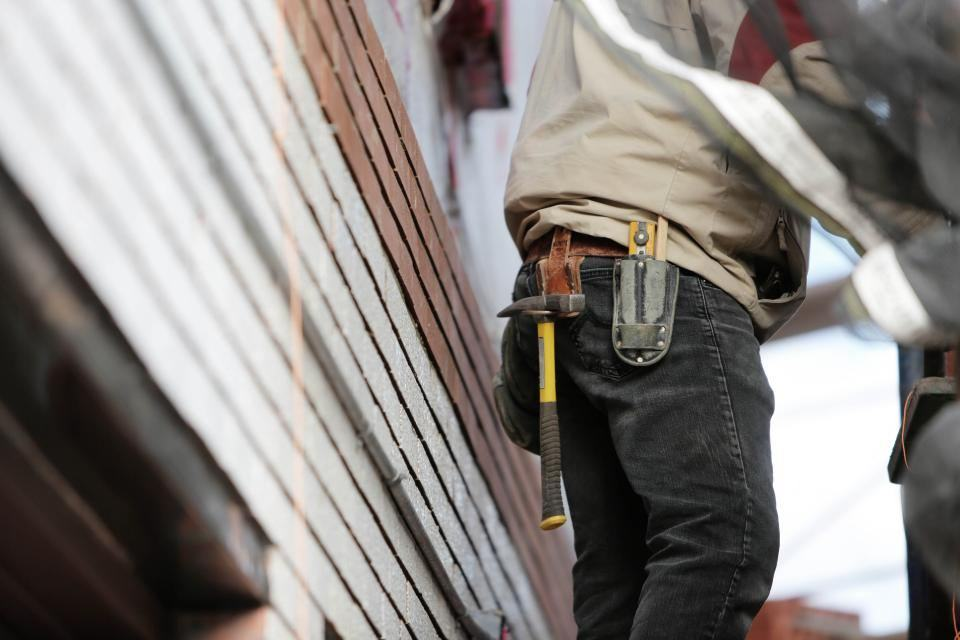

Avtal & priser
Säsongsavtal för villor och föreningar – plus jourpriset för dig som ringer utan avtal.
Säsongsavtal och jourpris
Villa
Infart upp till 60 m² i Östersund, Frösön eller Brunflo.
5 400 krper säsong- Plogning vid 5 cm nysnö
- Klart före 7 på vardagar
- Sandning vid behov
- Avdrag om vi missar tiden
- Flest avtal
Förening
För brf:er och samfälligheter med gård och parkering.
fr. 2 900 krper månad, nov–apr- GPS-logg för varje runda
- Halkbekämpning av gångar och trappor
- Snöbortforsling ingår två gånger per säsong
- Prioriterad ledningsjour
Jourutryckning
För dig utan avtal – när något akut har hänt.
1 950 krstartavgift + timpris- Maskin inom 60 minuter i tätort
- Prisbesked innan vi åker
- Skriftlig rapport efteråt
- Gäller dygnet runt, alla dagar
Timpriser för jour och extrajobb
| Hjullastare med förare, per timme | 1 150 kr |
|---|---|
| Traktor med plog och sandspridare, per timme | 960 kr |
| Grävmaskin 14 ton med förare, per timme | 1 250 kr |
| Ångtining, per timme | 1 400 kr |
| Sugbil, per timme | 1 650 kr |
| OB-tillägg natt och helg | + 40 % |
| Snöbortforsling, per lass | fr. 1 800 kr |
Villapriset är inklusive moms. Föreningspriser och timpriser är exklusive moms.
Från samtal till rapport
- 1

Du ringer
Jourledaren svarar, frågar vad som hänt och ger dig ett klockslag.
- 2
Närmaste maskin skickas
Vi ser alla fordon på kartan och skickar den som är närmast med rätt utrustning.
- 3

Åtgärd på plats
Föraren stoppar skadan först och rapporterar till dig med bilder.
- 4

Rapport nästa morgon
Du får en skriftlig rapport med tider, åtgärder och förslag på permanent lagning.
Vad kostar det att ringa jouren?
Det kostar ingenting att ringa. En utryckning debiteras med en startavgift på 1 950 kronor plus timpris för maskin och förare, och du får alltid ett prisbesked innan vi åker.
När börjar ni ploga?
Vid fem centimeter nysnö, eller tidigare om det står i avtalet. Vardagar ska alla gårdar vara klara före klockan sju, helger före klockan nio.
Kan ni tina alla sorters ledningar?
Vi tinar plast med ånga och metallrör elektriskt. Gamla gjutjärnsledningar kan ibland behöva grävas fram om isproppen sitter vid en skarv.
Har ni avtal för villor?
Ja, säsongsavtal för infarter i Östersund, Frösön och Brunflo. Vi har ett begränsat antal platser och fyller dem i oktober.
Vad händer om ni inte kommer i tid?
I säsongsavtalet står en garanterad plogningstid. Missar vi den får ni avdrag på nästa faktura.
Åker ni utanför Östersund?
Vi täcker Östersund, Krokom, Brunflo och Åredalen. Längre ut tar vi bara jouruppdrag åt befintliga avtalskunder.